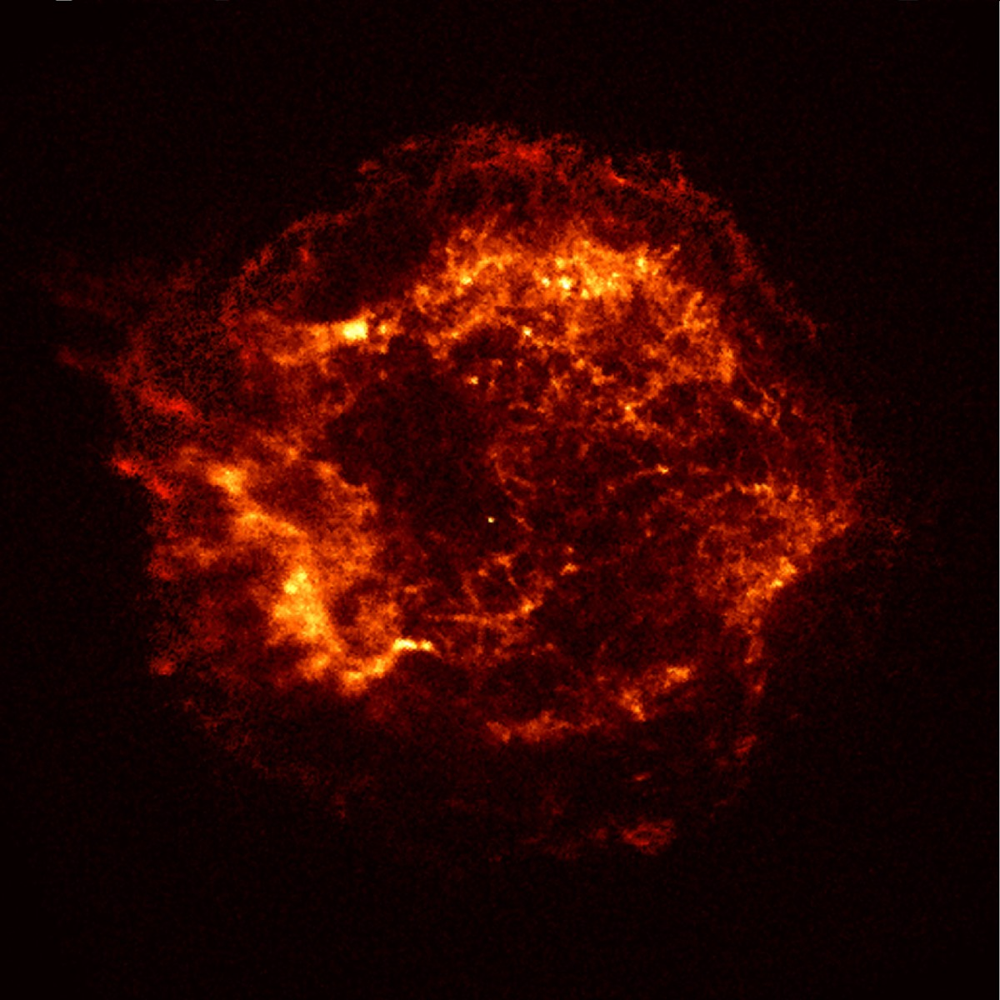

А потом наступит счастье · 2020
Стэндап для никого

Две секунды ступора и я снова давлюсь от смеха.
- А ещё я дважды бросал курить, жаль только недалеко. Сигареты-то лёгкие. Ахахах! - одиноко бредущий парень в очках-стрекозах схватился за живот.
Сначала я не понял, а потом как заорал! Жжот, чувак.
- А, ещё вспомнил. "Бьёт - значит любит", а ему в ответ - "Мда, электрик из тебя конечно…"
Я снова догнал не сразу. Но потом въехал - и на всё поле кааааак давай стрекотать:
«Ччч! Ччч! Ччч!»